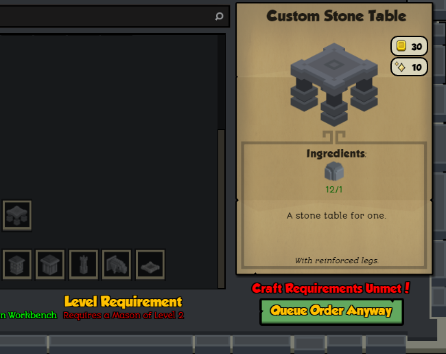
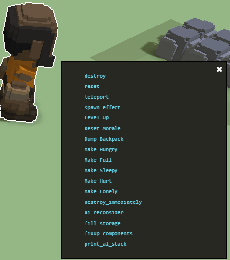
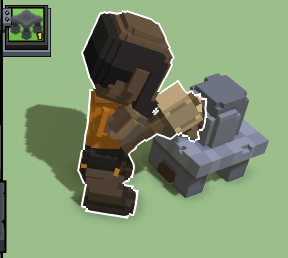

We've covered how to create our own items in this previous section. Of course, you can add whichever components you want for those items and, if you create the models from scratch, make sure to check the modeling guide and the guide on collision regions so that your models are correctly exported and aligned in the world. Here's how to change the scale of an item too, if you need it.
In this other guide we cover how to add your own crafting job to the game.
Steps to add a recipe to an existing crafter from the stonehearth mod
Decide which existing crafter will craft the item.
Create a recipe for the item.
Add a mixinto to integrate the new recipe in the recipes list of that crafter.
Test that the crafter can craft the item.
Let's get started. We're going to add a recipe for the custom table that we created in a previous example in the startermod_basic mod. We'll make the mason craft it.
Anatomy of a recipe
Let's copy the recipe of the "table_for_one" of the carpenter and adjust its values to reference our custom table and our mod's localization file. It is located inside stonehearth\jobs\carpenter\recipes. We'll call our file custom_table_recipe.json. Let's also add some extra fields that we can encounter in recipes:
{
"type": "recipe",
"effort": 30,
"work_units": 3,
"recipe_name": "i18n(startermod_basic:jobs.mason.recipes.custom_table_recipe.recipe_name)",
"description": "i18n(startermod_basic:jobs.mason.recipes.custom_table_recipe.description)",
"flavor": "i18n(startermod_basic:jobs.mason.recipes.custom_table_recipe.flavor)",
"portrait": "/startermod_basic/entities/furniture/custom_table/custom_table.png",
"level_requirement" : 2,
"workshop": "stonehearth:mason:workbench",
"ingredients": [
{
"material": "stone resource",
"count": 1
}
],
"produces": [
{
"item": "startermod_basic:furniture:custom_table"
}
]
}
Explanation of the fields:
"type" : "recipe". With this we indicate that this JSON file represents a crafting recipe.
"work_units" : 3. This value is the number of times the crafting animation will be played. The higher, the more time it will take to craft the item.
"effort" : 30. This is a numerical value for "effort based crafting". It represents number of in-game minutes that it takes to craft the item (as defined in constants.json).
At the time this guide is released it might / might not be enabled yet (if you don't include it in your recipe, a default value will be used depending on the stonehearth crafter that has the recipe). Make sure to at least specify the "work_units", until this field is enabled in the game.
Effort based crafting replaces "work_units" for crafting, to make the crafting speed not dependent of the length of the crafting animation. Some crafting animations are shorter than other ones, so for the same "work units" certain crafters take less time to craft the item.
"Effort based crafting" not only removes the animation dependency, it also makes the crafting faster or slower depending on things like the crafter level, whether he is tired (has the "Groggy" debuff), or happy / sad.
You can find more info about this in
stonehearth/components/workshop/crafting_progress.lua, and instonehearth/components/crafter/crafter_component.lua."recipe_name" : "i18n(...)". The name that will be displayed on the workshop UI for the recipe.
"description" : "i18n()". The description that will be displayed on the workshop UI for the recipe.
"flavor" : "i18n()". The small text in italic that will be displayed on the workshop UI for the recipe. It is optional.
"portrait" : "...". The path to an image for the recipe. This image is usually in the item's folder, not in the recipe's folder, since it's also used as the icon for the unit frame.
"level_requirement". This is an optional field. The level that the crafter needs in order to unlock this recipe. Until he/she reaches this level, the recipe will appear grayed out in the workshop UI. All jobs start at level 1 (but workers don't level up, they're the basic job). If we don't add a level requirement, they'll be able to craft the item right away, if they have the required ingredients.
"workshop" : "uri_of_the_workbench". This is the qualified alias of the workbench that the crafter will be using in order to craft the item. We can only specify one alias. You can find the alias for the existing workbenches in the stonehearth manifest. Remember to prefix it here with the namespace of the mod that defines it (in this case, stonehearth).
 If we don't add the "workshop" field to the recipe file, the crafter will craft the item with their hands instead. This is normally used to craft the initial workbenches.
If we don't add the "workshop" field to the recipe file, the crafter will craft the item with their hands instead. This is normally used to craft the initial workbenches.
"ingredients" : [{...}]. This is the list of ingredients for the recipe. It is an array of objects. You can use either generic resources like in our custom table recipe (with the material tags of the resource's entity_data), or specific uris as ingredients, like this:
"ingredients": [ { "uri": "stonehearth:food:egg", "count": 2 }, { "uri": "stonehearth:food:carrot:carrot_basket", "count": 1 } ],
Using generic resources means that the crafter can use any item that counts as that resource (wood from any type of tree, for example). Remember to prefix the alias of the items with the namespace of the mod plus a colon. The "count" field of the ingredients is self-explanatory.
"produces" : [{...}]. This is another array of objects. Here we put the outcome of the recipe. There's one difference with the previous array of objects though. If we want the recipe to produce more than one item, we can't use a "count" field here. We need to repeat the same "item" in different entries instead; like this:
"produces": [ { "item": "startermod_basic:furniture:custom_table" }, { "item": "startermod_basic:furniture:custom_table" }, { "item": "startermod_basic:furniture:custom_table" } ]
We can also make the recipe produce several different items with that method, simply writing different URIs.
Adding the recipe to the recipes list
We need to create a mixinto for the recipe list. We'll take the keys from the stonehearth/jobs/mason/recipes/recipes.json file:
{
"craftable_recipes" : {
"furniture" : {
"recipes" : {
"custom_table_recipe" : {
"recipe" : "file(custom_table_recipe.json)"
}
}
}
}
}
In this case, we're reusing an existing category from the mason's recipes (furniture). If we wanted to add our recipes in a new category of our own (that will be displayed separately in the recipes list from the workshop's UI), we'd need to add two more fields to our mixinto. Example:
{
"craftable_recipes" : {
"custom_category" : {
"ordinal": 80,
"name": "i18n(startermod_basic:jobs.mason.recipes.custom_category_name)",
"recipes" : {
"custom_table_recipe" : {
"recipe" : "file(custom_table_recipe.json)"
}
}
}
}
}
There, "custom_category" is an identifier for the recipes group. "ordinal" is a number used to order the groups in the UI, which ones will be before the other ones (if two categories have the same ordinal, the game will choose one of them to go first, it's not deterministic which one will win). And the "name" is a localized name for the group, which will be displayed in the workshop UI for that category.
Then, don't forget to add our mixinto to the mod's manifest (remember to add commas where needed):
...
"mixintos" : {
"stonehearth/jobs/mason/recipes/recipes.json" : "file(recipes/recipes.json)"
}
...
 If you add a custom crafting job, the recipes for it won't need to be added via a mixinto, but rather via a property of a component.
If you add a custom crafting job, the recipes for it won't need to be added via a mixinto, but rather via a property of a component.
Lastly, let's test that the mason can craft our recipe using debugtools:
- Start a new game.
- Select a hearthling.
- Open the default console and type promote_to mason, then press Enter.
- Use the item stamper to spawn a mason workbench and some hunks of stone, or simply let the hearthlings harvest some stone.
- Open the mason workbench and check that the recipe is there and shows correctly the image and text: 
- Our mason doesn't have enough level to craft it, so we shift-click on him, and click on "Level Up". 
- Now we can order to craft our new item and check that the iconic is generated correctly. 
Using SHED to add recipes
As explained in the creating items section, we can create an item and a recipe for it in one step. Otherwise, we can uncheck any unwanted files that we don't want to create from the clone popup, leaving only the recipe file checked.
 At the time this guide was written, recipes can't be cloned properly with SHED. You can, however, let them clone into the original mod (using your replacement text) and then cut and paste them into your mod, and manually add your mixinto to the corresponding crafter, deleting any unwanted reference that gets created in the stonehearth mod.
At the time this guide was written, recipes can't be cloned properly with SHED. You can, however, let them clone into the original mod (using your replacement text) and then cut and paste them into your mod, and manually add your mixinto to the corresponding crafter, deleting any unwanted reference that gets created in the stonehearth mod.
Cloning crafting jobs is known to throw an error and hang SHED. Please don't attempt this until the bug gets fixed. Other jobs might try to clone things to the stonehearth mod due to bad replacements or not clone everything, so be careful.